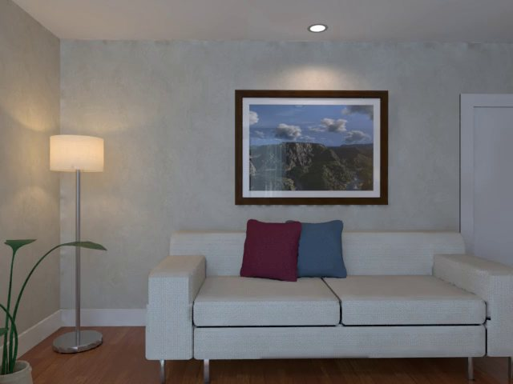
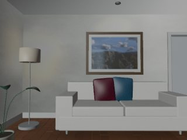
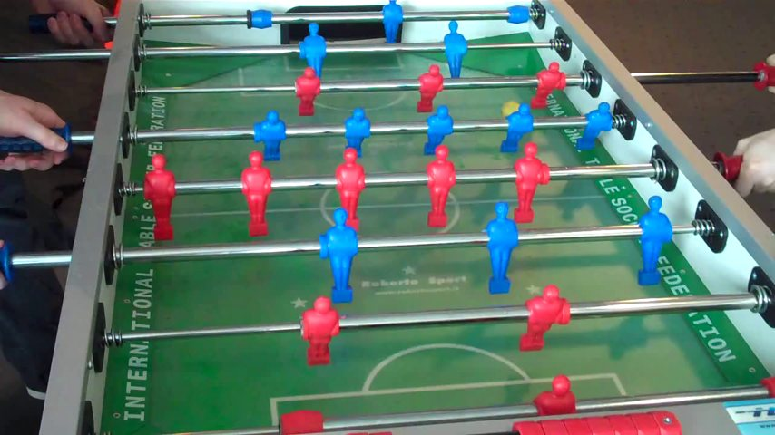
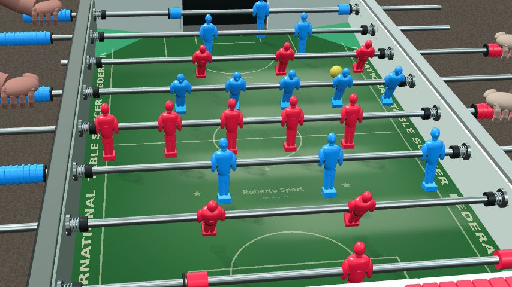
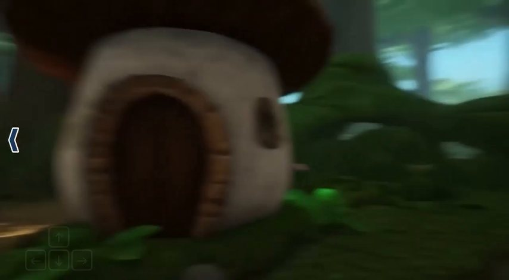
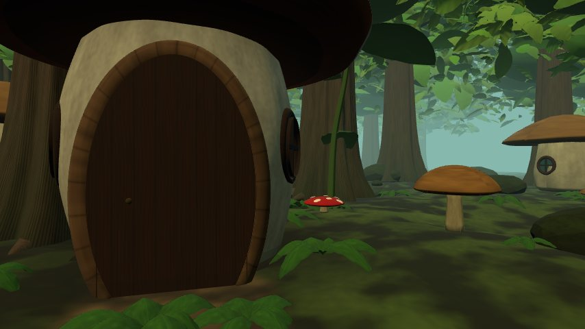
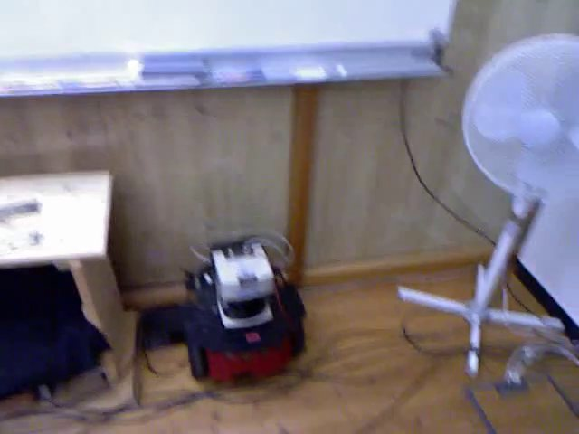
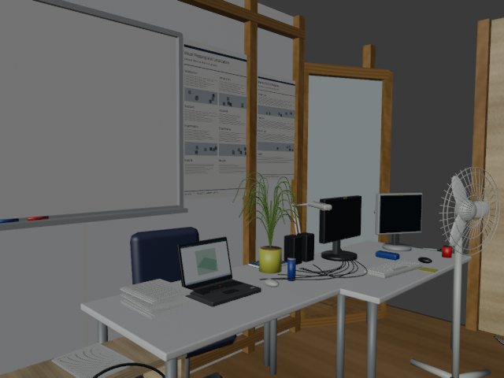

Experiment report · visual-pi110-14t · 18 November 2026
SoL-Pi Visual: rebuilding scenes and games from video
SoL-Pi lets a strong model hand routine steps to a cheap one. We tried it on the hardest work we have: an agent gets one short video and two hours, and must rebuild what it saw, either as a solid 3D scene with a camera path or as a playable game. On 14 tasks, both SoL-Pi packages made the bill much smaller and the score lower, and reconstruction lost more than games.
−6.4
points, Sol + E160
79.19 → 72.77 on 11 scored tasks 90% CI [−9.9, −3.4]
64%
cheaper, Sol + E160
$75.57 → $26.99 API cost at list prices
−5.6
points, Opus + E154
73.91 → 68.29 on 11 scored tasks 90% CI [−9.6, −2.7]
38%
cheaper, Opus + E154
$231.27 → $143.12 API cost at list prices
Reconstruction lost more than games. Sol: −8.2 on 7 reconstruction tasks against −3.4 on 4 games. Opus: −8.9 on 5 against −2.9 on 6. Sol with E160 scored lower than plain Pi on all 11 tasks scored in both arms.
01 · The benchmark
One video in, a scene or a game out
The SoL-Pi Visual benchmark has 115 tasks. Each gives the agent a short video and asks it to rebuild the content with ordinary tools, inside a sandbox with no GPU. This is an agent evaluation, not RL training: the score below is an evaluation score, and every run is a single two-hour attempt.
What the agent gets
inputs/clip.mp4, about 5 MB (sometimes with frame_times.json), and inputs/public_input.json
TASK.md: generic rules plus one paragraph for this task
INTERFACE_V6_3.md: the deliverable contract, the same shape for every task of a type
preflight.py and harness/, the same harness the evaluator runs
tools/ (frame extraction, browser capture) and an unmodified three.js r180
Play the reference back in full (no video on a plane, no screenshots on planes)
Fake interaction with fixed event timings
The evaluator checks solidity, novel views and engine state, so most shortcuts fail on their own as well.
Three task types
Reconstruction · 7 tasks
Rebuild a static scene
Turn the video into a solid 3D model (not camera-facing image planes) plus the camera that filmed it, one pose per video frame. "The source camera and off-trajectory views must remain coherent." No interaction.
world.mjs exports createWorld() returning reset(seed), act(name, args), step(dt), state(), a scene and a camera. It must import under Node with no DOM.
world.mjs · manifest.json (objects, held / trigger actions) · inputs/default.json that replays the video
Game · Godot · 3 tasks
Rebuild it in a game engine
The same game contract in Godot: a node in group vwif with vwif_reset, vwif_act and vwif_state. The engine is fixed per task; the scorer runs the agent's Linux build.
For games the evaluator reads the engine (pose, visibility, bounding boxes, attachments, camera), never the agent's own event log. It reruns the world with changed, delayed or removed inputs and changed starting conditions, may remove an object, and sends stacking puzzles such as Hanoi illegal moves that must leave the state unchanged. The same inputs must give byte-identical logs. A missing or ambiguous readout counts as unknown, which is not a pass. (The contract also has a physics axis with MuJoCo; none of these 14 tasks use it.)
What it looks like
Frames from three runs of the E160 arm (GPT-6.1 Sol handing off to GPT-6 Luna). The left image of each pair is a frame of the input video; the right one is the agent's own render of the same moment, taken from images the agent opened during its run. These are working renders, not the evaluator's captures.

Input frame

Agent render
Reconstruction · V6N_R_ICL_LIVINGROOM_KT2, t = 0 s. The input is likely the synthetic ICL-NUIM living room (trajectory kt2), going by the task name. The render is the agent's Blender scene seen from its own estimated camera, made in the last minutes of the run at half resolution. Score: E160 87.0, plain Sol 88.9.

Input frame

Agent render
Game · Three.js · V6N_G_REAL_FOOSBALL, t = 0 s. Input: real footage of a foosball match. Render: the agent's playable Three.js world at the start of its input script, from its delivery check near the end of the run. Score: E160 59.9, plain Sol 63.1.

Input frame

Agent render
Game · Three.js · V6N_G_GEN_GENIE3_MUSHROOM_DOOR, t = 0 s. The task name suggests the clip was generated with Genie 3; the arrow-key hints are part of the input video. Render: the agent's capture of its world about 1.5 hours into the run. Score: E160 73.8, plain Sol 74.1.
How the 14 tasks were run
14 taskschosen before any score was read, in two batches: mixed4 and m10
4 armsevery task run once per arm, all four at the same time on the same CPU nodes
2 hours7,200 s of agent time; a continuation prompt if the agent stops early
4 CPU · 32 GBCPU-only rendering; checkpoints at 15, 30, 60 and 120 min
Arm
Pi version
Strong model
Hands routine steps to
Hand-off judge
Other mechanisms
Plain Sol
1.1.0
GPT-6.1 Sol, high
—
—
—
SoL-Pi E160
1.2.0
GPT-6.1 Sol, high
GPT-6 Luna
GPT-6 Luna
a note replaces each Luna stint when Sol returns
Plain Opus
1.1.0
Claude Opus 5.5, high
—
—
—
SoL-Pi E154
1.2.0
Claude Opus 5.5, high
Claude Haiku 5.5
GPT-6 Luna
priced compaction, background bash
"High" means reasoning.effort: high for Sol and a 16,384-token thinking budget for Opus; it was checked on every main call. The batches: mixed4 has 2 reconstruction tasks and 2 games (one Three.js, one Godot); m10 has 5 reconstruction tasks, 3 Three.js and 2 Godot games. The final deliverable is frozen with a sha256 per file, and only that copy is scored.
02 · How it is scored
Capture, a judge panel and a checklist
Figure 1. From video to score. The agent sees the same preflight harness the evaluator uses, but preflight only checks compliance; correctness is judged after the run, on the frozen copy.
Preflight
Compliance, "not correctness"
Schema, determinism, dependence on inputs, and one render. Passing it says the files are valid, nothing about whether the scene looks like the video.
Capture
Frames at fixed times
854×480 frames. For reconstruction, colour and depth are rendered from the agent's own camera poses and from fixed poses off the trajectory, so a flat backdrop that only works from the source camera falls apart.
Q · quality
Three judges, both orders
Three VLM judges compare candidate and reference frames, each in both A/B orders to cancel position bias. Mean per judge, then the median over judges. Reconstruction Q covers layout (view route 10, footprint 15, relations 10), objects, geometry, appearance and solidity.
R · requirements
Weighted checklist
Each item is graded 0 to 1 in steps of 0.25, as the median of three judges. Reconstruction weights seen in these runs: X-RUN 15, R-C1 to R-C4 16 each, R-NOVEL-VIEW 16, plus X-FILES for file validity. The C9 tasks use the C9 R99 checklist.
S · final
S = (Q + R) / 2
Only when both Q and R are final. Otherwise the run keeps bounds [0, 100] and no score.
Unknown ≠ 0
Failures are not zeros
An unscored run is left out of the score comparison, not counted as 0, and it stays in the bill. Seven of the 56 runs here are unscored.
03 · Results
Cheaper, and lower on almost every task
Scores are means over the tasks scored in both arms of a pair. Bills cover every task run, including unscored ones, at API list prices with helper calls included. Intervals are 90% bootstrap intervals over the scored task pairs.
Pair
Batch
Scored in both
Plain Pi 1.1.0
SoL-Pi v2
Bill, all tasks run
Cheaper
Score difference
Sol (E160)
mixed4
3 of 4
80.69
73.29
$24.11 → $6.39
73.5%
−7.4
Sol (E160)
m10
8 of 10
78.63
72.58
$51.45 → $20.60
60.0%
−6.1
Sol (E160)
both
11 of 14
79.19
72.77
$75.57 → $26.99
64.3%
−6.4 [−9.9, −3.4]
Opus (E154)
mixed4
4 of 4
71.28
60.48
$68.94 → $41.65
39.6%
−10.8
Opus (E154)
m10
7 of 10
75.41
72.74
$162.33 → $101.47
37.5%
−2.7
Opus (E154)
both
11 of 14
73.91
68.29
$231.27 → $143.12
38.1%
−5.6 [−9.6, −2.7]
On the scored pairs alone the saving is 61.8% for Sol and 39.0% for Opus.
Plain Pi 1.1.0SoL-Pi v2 (Pi 1.2.0)RreconstructionGgameRight column: SoL-Pi minus plain, in points of S
Sol pair · plain Pi 1.1.0 vs SoL-Pi E160 · 11 scored tasks
RV4_R001
−23.1
RREPLICA_OFFICE2
−15.6
RV4_B012
−7.0
GG5_WP2_PICKUP
−6.9
RSUN3D_STUDYROOM
−5.4
RBONN_STATIC
−3.3
GREAL_FOOSBALL
−3.2
GC9_CRANE_LIFT
−3.1
RICL_LIVINGROOM_KT2
−1.9
RV4_A013
−0.8
GGEN_GENIE3_MUSHROOM_DOOR
−0.4
Δ S
Not scored in both arms: C9_TIPPER_UNLOAD, R_GENIE_PAINT, V6N_G_REAL_HANOI
Opus pair · plain Pi 1.1.0 vs SoL-Pi E154 · 11 scored tasks
RBONN_STATIC
−26.2
RREPLICA_OFFICE2
−6.4
RV4_A013
−5.6
GGEN_GENIE3_MUSHROOM_DOOR
−5.5
GREAL_FOOSBALL
−5.4
GREAL_HANOI
−5.2
RV4_B012
−4.3
GG5_WP2_PICKUP
−3.5
RICL_LIVINGROOM_KT2
−2.2
GC9_CRANE_LIFT
+1.0
GC9_TIPPER_UNLOAD
+1.5
Δ S
Not scored in both arms: R_GENIE_PAINT, V4_R001, V6N_R_SUN3D_STUDYROOM
Figure 2. Score S per task, plain Pi against SoL-Pi, sorted by the difference. The x-axis runs from 30 to 95. Sol with E160 is lower on all 11 tasks; Opus with E154 wins 2 (both C9 games) and loses 9. Hover a row for exact values; the full table is below.
Sol · reconstruction (7)
−8.2
Sol · games (4)
−3.4
Opus · reconstruction (5)
−8.9
Opus · games (6)
−2.9
Figure 3. Mean score difference (SoL-Pi minus plain) by task type, with the number of scored tasks in brackets. One task, V4_R001, is 60% of Sol's net reconstruction loss (see the case study); Opus's reconstruction mean is pulled down by V6N_R_BONN_STATIC (−26.2).Per-task table (all 14 tasks, 56 runs)
Task
Type
Batch
Input (from the name)
Plain Sol
E160
Δ
Plain Opus
E154
Δ
V4_A013
Reconstruction
m10
not stated
80.12
79.38
−0.75
81.50
75.88
−5.62
V4_B012
Reconstruction
m10
not stated
77.69
70.69
−7.00
65.31
61.00
−4.31
V4_R001
Reconstruction
m10
handheld video of an office / lab
70.56
47.50
−23.06
42.50
—1
V6N_R_ICL_LIVINGROOM_KT2
Reconstruction
m10
likely ICL-NUIM (synthetic)
88.88
87.00
−1.88
82.06
79.88
−2.19
V6N_R_SUN3D_STUDYROOM
Reconstruction
m10
likely SUN3D
91.25
85.81
−5.44
83.69
—2
V6N_R_BONN_STATIC
Reconstruction
mixed4
likely Bonn RGB-D (static scene)
87.69
84.38
−3.31
62.06
35.88
−26.19
V6N_R_REPLICA_OFFICE2
Reconstruction
mixed4
likely Replica (synthetic)
91.25
75.62
−15.62
79.06
72.69
−6.38
C9_CRANE_LIFT
Game · Three.js
m10
not stated
70.30
67.23
−3.07
69.48
70.46
+0.98
C9_TIPPER_UNLOAD
Game · Godot
m10
not stated
—3
80.50
79.75
81.25
+1.50
G5_WP2_PICKUP
Game · Three.js
m10
not stated
76.12
69.25
−6.88
71.88
68.38
−3.50
R_GENIE_PAINT
Game · Godot
m10
likely generated with Genie
—4
—5
—6
65.62
V6N_G_GEN_GENIE3_MUSHROOM_DOOR
Game · Three.js
m10
likely generated with Genie 3
74.12
73.75
−0.38
77.88
72.38
−5.50
V6N_G_REAL_FOOSBALL
Game · Three.js
mixed4
real footage of a foosball table
63.12
59.88
−3.25
69.50
64.12
−5.38
V6N_G_REAL_HANOI
Game · Godot
mixed4
likely real footage (Tower of Hanoi)
79.00
—7
74.50
69.25
−5.25
1 E154 Opus on V4_R001: no final reconstruction score.2 E154 Opus on V6N_R_SUN3D_STUDYROOM: no final reconstruction score.3 plain Sol on C9_TIPPER_UNLOAD: capture failed: frame size 742×480.4 plain Sol on R_GENIE_PAINT: no Q: exact tick frames missing.5 E160 Sol on R_GENIE_PAINT: capture failed: frame size 854×470.6 plain Opus on R_GENIE_PAINT: no Q: exact tick frames missing.7 E160 Sol on V6N_G_REAL_HANOI: capture failed: build rendered 262×480, not 854×480.
"Input" is read from the task name and the input frames; dataset names are likely sources, not confirmed. For the 8 C9 runs, R comes from the C9 R99 checklist supplement.
Did the hand-off actually happen?
E160 · Sol → Luna
Luna made 73% of the main calls (2,939 of 4,047) and cost $5.62. Sol's own bill fell from $73.87 to $20.64.
E154 · Opus → Haiku
Haiku made 24% of the main calls (1,431 of 5,871). Opus made more calls than in plain Pi (4,440 against 3,425) but cost less ($138.77 against $230.24).
Read these numbers with care
Two changes at once. The plain arms run Pi 1.1.0 and the SoL-Pi arms Pi 1.2.0, so every difference mixes the extension with the Pi version change.
One run per task. Single runs swing a lot; the batches already disagree (Opus: −10.8 on mixed4, −2.7 on m10). Read the 11-task figure, not either batch.
Bills are lower bounds. Some usage had no recorded tokens and is left out of the bills. The largest gap is HTTP attempts with no session message on Opus: 475 for E154 and 284 for plain.
Seven unscored runs, kept out of the score and kept in the bills. Three game captures failed because the build's frame size was wrong (E160 on Hanoi and R_GENIE_PAINT, plain Sol on C9_TIPPER_UNLOAD). Plain Sol and plain Opus on R_GENIE_PAINT have no Q because exact tick frames are missing. Two E154 reconstruction runs have no final score.
The judges are noisy. For the E160 run on V4_R001, the three judges' R totals were 28.75, 40.5 and 60.25.
Side note · Video2World, 20 tasks
The same four arms on 20 Video2World robot-manipulation tasks from five task families, run the same day with the official scorer, show the same direction. Sol + E160: −5.4 [−10.9, −0.2], 39.2% cheaper. Opus + E154: −4.3 [−10.0, +1.4], 12.6% cheaper. All 80 runs were scored; the two batches of ten disagree strongly (plain Sol scored 54.5 on one and 69.3 on the other).
04 · Case study
V4_R001: a hand-off on an unchecked premise
The largest single loss. The task: rebuild an office / lab from a handheld video. E160 scored 47.5 against 70.6 for plain Sol (−23.1), which is 60% of Sol's net loss on reconstruction. Q fell 72.9 → 54.5 and R fell 68.25 → 40.5. Of the Q gap, layout accounts for −10.0, objects for −5.6, and geometry and appearance together for only −2.75.

Input frame · ~16.5 s

Agent render
Figure 4.V4_R001 near the 16 s mark. Left: the input frame, looking down at the floor (robot base, cables, fan). Right: the E160 agent's own render of the same moment from its camera path, made by Luna about 97 minutes into the run; it looks level at the whiteboard wall instead. This is a working render, not the evaluator's capture, but the judges reported the same miss at 17.57 s: "the reference floor area (floor socket, cables, fan base, white cabinet) is replaced by a whiteboard and poster wall."
Sol drivesLuna drivescheck passedspan of repeated activity
Model driving
Hand-off judge
Preflight passed
Camera-key edits (14)
Hand-back checks (12 × no)
minutes
Figure 5. The E160 run on V4_R001, minutes from the session start. The hand-back span starts at the switch; the exact time of the first of the 12 checks is not recorded here.
Sol works on the camera. It extracts frames and tries structure-from-motion; six hand-off checks say "stay", the last because "the current SfM alignment is visibly unreliable".
The judge hands off. At call 70, Luna as judge switches to Luna: "The scene layout and build pipeline are already established." No Blender build, render or preflight had run yet.
Sol's last act is to write make_camera.py with 30 hand-keyed camera poses and smooth interpolation. The fitted SfM poses are not used. This choice is Sol's, made before the switch.
Luna runs the first Blender build. Luna receives the full transcript, including all 28 images.
Preflight passes twice. No numeric fidelity or camera-route test exists, so nothing fails. The hand-back rule looks for a "repeated failing check" or "stuck", and never fires.
Luna edits the camera keys 14 times, and they oscillate instead of converging: the position at t = 11 s goes [1.05, 1.50] → [.85, .45] → [.80, 2.50] → [.80, 1.00] → [.85, 1.20].
All 12 hand-back decisions are "no", each judged by Luna about its own progress. The last: "Significant visual differences remain, but the current work is open-ended and still advancing."
Final files are written after the last preflight (65 min), with no recheck.
What plain Sol did instead
It marked image correspondences and fitted the camera with local NumPy feature tracking, a solved camera rather than free hand keys. Its frames at 13.4, 17.6 and 24.0 s show the coat rack and trays, the floor with fan and chair, and the desk. It cost $5.51, against $1.49 for E160.
What this does not show
That Sol continuing would have scored higher. That is untested (n = 1 per arm, no capture of Sol's version at the switch). Sol chose hand keys itself, and the camera keys behind two of the bad frames (21.7 s and 24.0 s) are unchanged from Sol's original.
The lesson for the hand-off design: the switch and every hand-back were judged by the cheap model on stated progress, and the only automatic check measured compliance. A task like this needs a fidelity signal inside the run, for example a camera-route or reprojection check, before "pipeline established" can be trusted.
05 · Related proxy tasks
How others make "see it, rebuild it" trainable
The Visual tasks are an evaluation. Work that trains models on similar skills picks proxy tasks whose reward can be computed cheaply. Each entry below uses the same fields: input, task, reward, training, and the main finding.
The Visual tasks are much closer to the capability we want, but their score is too costly and noisy to be an RL reward. The literature's proxies are cheap and deterministic, but far from real scenes. Two bridges look promising:
Dense, verifiable reconstruction reward. On datasets with ground-truth geometry and camera trajectories, score the camera by trajectory error (ATE) and the geometry by depth error or Chamfer distance, and keep a VLM judge only as a final check. This is our inference; we have not verified that the benchmark has or uses ground truth.
Counterfactual checks as rewards. The game axis already runs deterministic checks (changed inputs, removed objects, illegal moves). They could become verifiable rewards as they are.
For SoL-Pi itself, the case study points at the same gap from the other side: without a fidelity signal inside the run, a cheap model cannot tell that it is stuck, and neither can its judge.